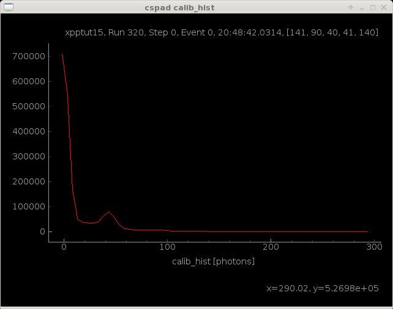

Count Photons¶
Using a threshold of 200 ADU, and assuming a gain of 35 ADU/photon (approximately at 9.5 keV for CsPad detectors), we can count the number of X-rays in the rings.
In [7]: evt.cspad.add.count('calib', limits=(200,10000), gain=evt.cspad.gain, unit='photons', doc='Counts in rings')
Make a Histogram¶
We can also histogram the number of photons in the pixels. Using the same gain factor of 35 ADU/photon, the range of the calibrated cspad detector in high-gain mode is ~300 photons.
In [8]: evt.cspad.add.histogram('calib', bins=range(-4,300,5), gain=evt.cspad.gain, unit='photons', doc='Gain corrected histogram', publish=True)
The publish keyword will open up the resulting histogram plot automatically.

Summarize Event Data¶
Use the show_info method for a table of the event statistics. Note that for statistical calulations like count and histogram, it is better to use the calib data instead of the reconstructed 2D image.
In [9]: evt.cspad.show_info()
Out[9]:
--------------------------------------------------------------------------------
cspad xpptut15, Run 320, Step 0, Event 0, 20:48:42.0314, [141, 90, 40, 41, 140]
--------------------------------------------------------------------------------
calib <10.31> ADU Calibrated data
image <8.276> ADU Reconstruced 2D image from calibStore geometry
raw <1.579e+03> ADU Raw data
shape (32, 185, 388) Shape of raw data array
size 2296960 Total size of raw data
--------------------------------------------------------------------------------
User Defined Histograms:
------------------
calib_hist <3.248e+04> photons Gain corrected histogram
--------------------------------------------------------------------------------
Detector Counts:
------------------
calib_count 30497 photons Counts in rings
--------------------------------------------------------------------------------
User Defined Parameters:
------------------
gain 0.028571